The player's manual: the twelve hours of the Duat, and how to come out of them alive
You are an archaeologist who touched the wrong statue. The tomb closed behind you, and the only way left is down: through the twelve hours of the Duat, the underworld that the sun god Ra sails through every night. Each hour is a zone of its own, with its own stone, its own creatures and its own tricks: tombs with teeth in the floor, bat galleries, halls hung with webs, the priests' quarter, a scorpion nest, a serpent temple, flooded cisterns, desert sand, quicksand, a lake of fire, the necropolis, and at the very end the Hall of Judgment, where your heart is weighed. Behind Anubis waits the ankh: take it for life without end, or renounce the gods and break it. The choice is final, and the Hall of Records keeps it.
The world is drawn in 3D, but you walk it like a side-scroller: left and right along the halls, up and down ladders, over pits and across gaps. Find the key or the lever that opens the gate of its colour, beat what stands in the way, and take the exit down to the next level.
Light comes only from fire: torches on the walls, braziers and oil lamps. Some creatures hate it, and the dark halls are where they wait.
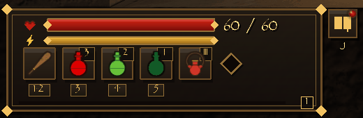
Health drops with every bite, blow and trap. When it runs out, the run ends, and you may try again from your latest save. Stamina pays for jumps, sprints and the stronger skills; it comes back by itself while you walk or stand.
Every creature you kill and every riddle you answer gives experience. A new level brings more health and stamina, both filled up at once, and clears any poison. Now and then a level also makes your skin tougher or your arm stronger.
The game saves by itself at the start of every level, after a solved riddle and after a slain guardian. F5 makes a quick save and F9 loads it; the menu (Esc) has save slots as well. After a death you can retry from the newest save.
Back to the topThese are the default keys. Every one of them can be changed in the menu: Options, Controls. The menu's How to Play page always shows the keys you use now.
| Move left / right | A D or Left Right |
| Climb up a ladder | W / Up |
| Climb down, crouch | S / Down |
| Jump | Space / RMB |
| Sprint (hold) | Shift |
| Look left / right | Home / End |
| Look up / down | PgUp / PgDn |
| Look around | the mouse |
| Attack | V / Enter / LMB |
| Power hit: hold, then let go | V |
| Next melee weapon | 1 |
| Next ranged weapon | 2 |
| Stamina skills on / off | Q |
| Open, pull, read, pray | E / F12 / MMB |
| Drag a mirror, let go | R |
| Drink healing | 3 / H |
| Drink stamina | 4 / 0 |
| Drink antidote | 5 / = |
| Inventory | I |
| Draft map | M |
| Journal | J |
| Heka (skills) | K |
| Menu, back | Esc |
| Comic look with ink lines | F1 |
| Quick save | F5 |
| Quick load | F9 |
The quick drinks pick the potion that fits best. The antidote key works only while you are poisoned.
Plug in a gamepad (Xbox, PlayStation, Steam Deck) at any time. The game shows its buttons once you use it. The buttons can be changed in Options, Controls (the Pad column), the stick speed and dead zone in Options, Look.
| Walk, climb | left stick |
| Look around | right stick |
| Jump | A / ✕ |
| Attack (hold: power hit) | X / □ |
| Open, pull, read, pray | B / ○ |
| Drag a mirror, let go | Y / △ |
| Sprint (hold) | LT / L2 |
| Stamina skills on / off | RT / R2 |
| Next melee / ranged weapon | LB RB / L1 R1 |
| Drink healing / stamina / antidote | d-pad up / right / left |
| Draft map | d-pad down |
| Inventory | Back / Share |
| Journal / Heka | press the left / right stick |
| Menu | Start / Options |
| In the menus: move, pick, back | d-pad, A, B |
A gate opens with the key of its colour, and that key opens every gate of the colour on the level. Some gates answer to a lever of their colour instead. A boss's gate stays shut until the boss is dead. Riddle gates ask a question; the journal keeps the riddles you have met. A name gate wants the royal name of the level, and the walls may tell it to those who can read them.
Chests, baskets, jars, coffins and canopic jars hold potions, weapons, amulets and rings. Not all of them are friendly: a chest may be a monster, or hold a trap of darts, gas or a curse. A trapped chest looks a little darker up close. Knock before you open: a hit shows a monster for what it is.
Spikes in the floor, pits, rocks that drop from a loose ceiling (grit trickles first), slabs that shoot darts, walls that stab in a rhythm, puddles of venom. Look before you step, and jump over what you can. Most creatures stop at the edge of a trap, so a trap between you and them is a friend. The dead and most bosses walk straight through the spikes.
You wade slowly through water, and some things swim much faster than you. Sand slows your step and stops your sprint. Quicksand is worse: the longer you stand in it, the deeper you sink, so jump out while you can. Fire burns on after the hit; water puts it out.
Every weapon deals Smash, Cut or Stab damage, or a mix of them, and every creature takes each kind of blow differently. A blade skids off a beetle's shell, a point slips between its plates. When a fight goes badly, change the weapon. The journal notes down what you learn about each creature.
Bows, slings, javelins and throwing sticks hit softer than a hand weapon and have only a few shots ready; the shots come back once you stop shooting for a while, and a foe right in front of you is too close to shoot. Open with them and finish up close.
A small creature bites low: jump as it opens its jaws, and the bite goes under you.
A brazier lights your next few arrows (E by it). Some creatures shrug off arrows but burn very well.
The Journal (J) keeps field notes on every new thing you meet: creatures, potions, traps, curses, the riddles and the carved words on the walls. The Draft map (M) shows the halls you have seen.
Back to the topEach hour has its own creatures. Many come in two sizes: the common kind, and a giant one that is tougher, stronger and has a trick or two of its own. A few examples from the first hours:
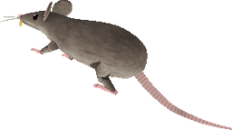
Quick, hungry and not afraid of you. Its bite hardly hurts, but it may make you sick.
It bites low: jump over the bite, strike as it lands.
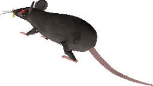
As big as a dog and faster than you walk. It leaps at you, its bite opens wounds, and when it is hurt it calls the pack.
You cannot outrun it: fight it up close and finish it fast.
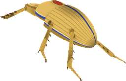
A beetle the size of a fist, in a hard shell. Scarabs dig out of the sand.
A blade skids off the shell; a point or a club does not.
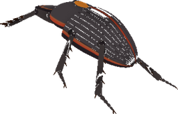
A beetle bigger than any beetle should be. It leaps over pits and traps and at you, and rolls balls of dung your way.
Jump the dung balls. Stab between the plates.
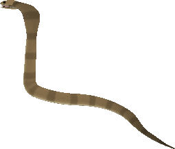
Lies coiled until you come near. Its bite poisons, and it spits venom from afar.
Carry an antidote into its halls.
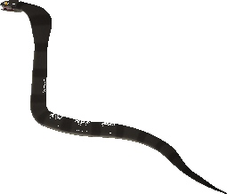
Black and as long as a boat. Its poison is worse, and its spit in your eyes leaves you half blind for a moment.
Do not trade spit with it: close in or keep out of its line.
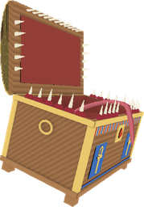
A treasure chest, until you reach for the lid and the lid reaches for you. Some chests are its darker kin, and their bite clouds the mind.
Knock first: a hit wakes it before your hand is in its mouth.
Bats hang asleep from the ceiling, crocodiles and hippos lie under the water, a lotus floats like a flower and a servant figure stands still among its kind until you come close. Mummies wait in their coffins.
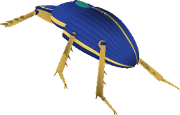
The scarab who rolls the sun across the sky. Every beetle in the room comes when he calls, and his dung balls burn.
Thin out his scarabs, keep moving, and stay out of the line of the burning balls.
Most hours have a guardian: a god or a god's beast, bigger and far stronger than its kin, with its kin's tricks and worse ones. A guardian's room is closed by a boss gate that opens only when the guardian dies, and each one you slay gives you a heka, the magic of the gods, to spend on a skill. Their health shows in a bar while you fight them.
Back to the topOpen the inventory with I. It has a tab for weapons, potions, amulets and rings; a click on an item shows its card, and the card's button uses it.
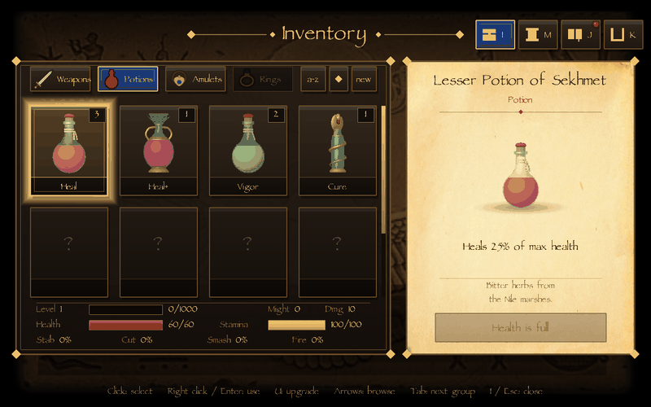
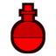
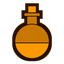
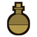
Antidotes, wards and the Blessing of Hapi turn up where they are needed: near the poisoners and the water.
You start with a club. Copies of your weapons lie in chests and now and then drop from a creature; with enough copies you upgrade a weapon in the inventory (U), and the weaker it starts, the more it gains. A few of them:
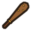
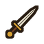
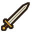
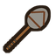
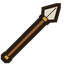
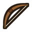
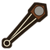
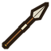
You wear one amulet at a time. Each kind comes in stronger and weaker tiers (lesser, minor, plain and grand), and the card says what yours does. A few of them:
You wear a ring on each hand. The gem says what a ring does, the metal how much: copper, silver, gold, and the rare sky-iron, fallen from the sky.
While you bleed, your amulet and your rings give you nothing.
Back to the topWhat is on you shows as cards above your panel: gold for a blessing, grey for a condition that is easy to end, purple for a curse.
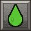
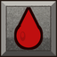
A spit in the eyes leaves you half blind for a moment; standing in water clears it sooner.
Some creatures, cursed lids and old servant figures lay a curse on you. No potion cures one: it fades after a while, a new one of the same kind starts it over, and a prayer at a Shrine of Isis lifts them all.
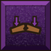
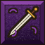
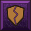
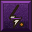
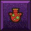
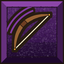
Each guardian you slay gives a heka. On the Heka screen (K) you spend it on a skill, for good, and a second heka raises some skills to rank II. There are more skills than guardians, so you never learn them all: choose with care.
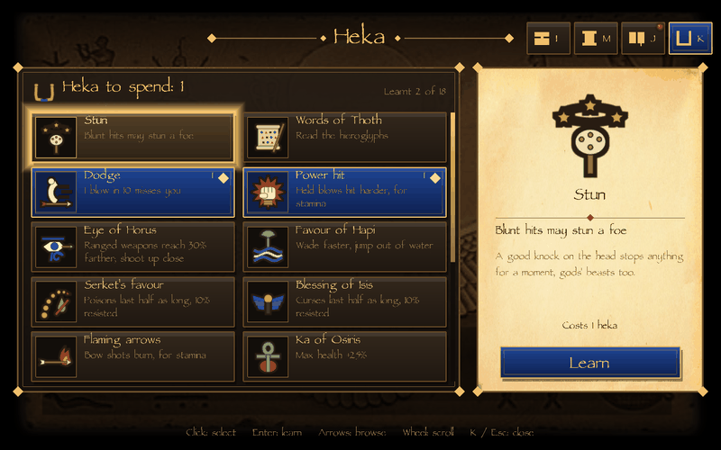
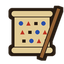
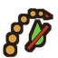
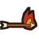
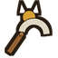
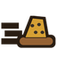
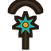
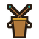
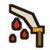
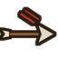
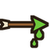
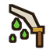
Q turns the skills that cost stamina on and off.
Back to the topHere and there a god sits in a shrine. Pray (E) for the god's blessing; it lasts a while, as often as you like, and the blessings of different gods add up.
A shrine also takes offerings: a spare ring, an amulet you do not wear, a spare potion or weapon copy, for experience. Now and then the god sends a gift back.
Back to the top